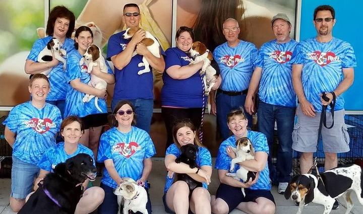
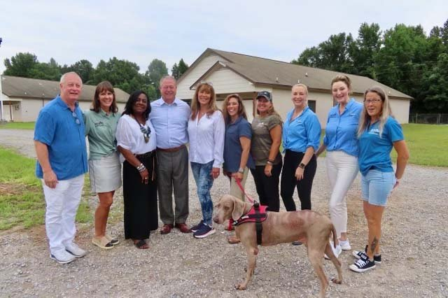
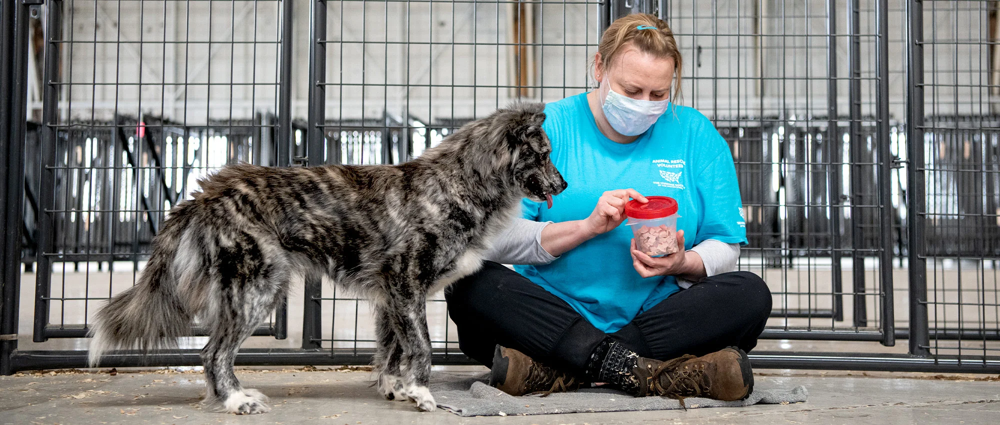
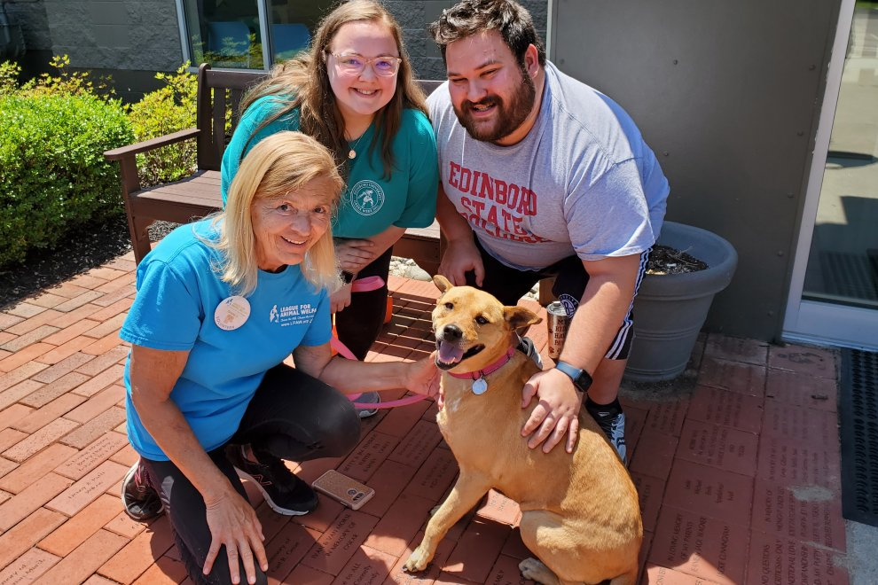
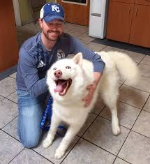

The Shelter's Mission
Team Information
Our team is made up of dedicated volunteers and professionals who ensure every animal gets the care they deserve.


We operate with compassion and commitment, making a difference in the lives of pets and their future families.
Meet our staff and volunteers who bring passion and love to Paws and Whiskers.
Get to Know Us
Founded in 2000, we’ve grown into a fully operational shelter with a reputation for excellence.


We’ve helped rehome over 5,000 animals in the last two decades, and our journey continues.
Explore our work and achievements. Every story adds to the shelter's legacy.
